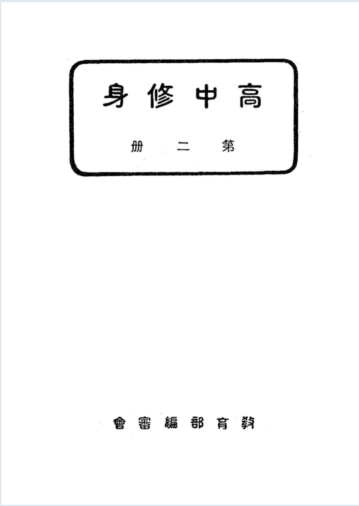

Occurrences
11
Exact minzu hits in this book

Textbook
This view contains all KWIC results for 民族 in this book, followed by the book's individual frequency result.
This table lists every minzu KWIC result found in this textbook.
| No. | Left context | Keyword | Right context |
|---|---|---|---|
| 433 | 生活必有秩序,家庭自然也得安然。從另一方面來看,家庭是社會生活的單位,家庭裏有秩序,各個人、各家庭、 | 民族 | 、國家的生活纔能安定,纔能發展。先儒有言國之本在家」,又說:「家齊而後國治」。在家庭聽從家長之命,守 |
| 434 | 要把他們當作自家私物,陷入那種利已觀念的深淵。父母對於子女身份上,財產上,是享有親權的,古代或野蠻的 | 民族 | ,都以子女爲一家的家產,生殺買賣純屬父母第一章家庭 |
| 435 | 方式。結果以固定的婚姻,生存的機會爲最大,若婚姻不固定,家庭的組織不成立,子女的生育無意義。必致促進 | 民族 | 自殺,所以人類社會能綿延不息;婚姻實爲必需條件。關於結婚方法,從歷史上看來,可大別爲四:第二章.夫妻 |
| 436 | ,是各時代共同的。在原始社會與氏族社會時代,男女都是自食其力的生產者,婚姻當然具有經濟意義,這從落後 | 民族 | 裏面,所流行的掠奪婚姻。服務婚姻,便可得到證明。及進到封建時代,男性中心社會早已確立,娶妻所以奉祖廟 |
| 437 | 除這種種弊端,正當的結婚年齡,至少在二十至二十五歲之間。至於結婚的儀式,乃隨着文化的變遷而異,在野蠻 | 民族 | 中,常把出世成年,結婚和死亡四種,視爲人生最重要的禮節。因此結婚的儀式,非常繁重,歐||美各國對於結 |
| 438 | 慾望,更爲迫切與普遍,幷且缺乏伸縮性;人類大都先求肉體慾望的滿足,然後再求精神慾望的滿足。文化較高的 | 民族 | ,則精神慾望較富;文化較低的民族,則肉體慾望較强。(二)現在慾望與未來慾望人類在社會上活動,不惟圖目 |
| 439 | 縮性;人類大都先求肉體慾望的滿足,然後再求精神慾望的滿足。文化較高的民族,則精神慾望較富;文化較低的 | 民族 | ,則肉體慾望較强。(二)現在慾望與未來慾望人類在社會上活動,不惟圖目前的溫飽,而且謀將來的幸福,前者 |
| 440 | 熟練的只所謂熟練就是需要較長時間的學習三不熟練則反是如熟練因時代、因國十因 | 民族 | 方尤其是因產業的性質而有不同。所以今日英||德法美的勞動者,縱使是不熟練的勞動者,但比較半開化的民族 |
| 441 | 民族方尤其是因產業的性質而有不同。所以今日英||德法美的勞動者,縱使是不熟練的勞動者,但比較半開化的 | 民族 | ,都是極精練極熟習的勞動者。與其分爲精練與不精練,不如說是就特別技能之要否而定。其長於特殊技術的勞動 |
| 442 | 所以資源的開發,成爲文化生活的重要因素自然的物質資源,能使人類集團生活圓滿,產生出優美的文化,翻開各 | 民族 | 的歷史,其中有不少的例證。我國立第七章勞動 |
| 443 | 入的限制一樣。總之,國家支出與私人支出,有相同處也有相異處。國家的支出,有時因社會進步,國際的交通和 | 民族 | 間的競爭,而有膨脹現象,但國家經費的支出,對於國民的利 |
Occurrences
11
Exact minzu hits in this book
Analysis chars
61,952
Cleaned characters used as denominator
Per 10k chars
1.78
Normalized frequency
| Subject | Self-Cultivation |
|---|---|
| Textbook | 高中修身 |
| Keyword | minzu (民族) |
| Raw occurrences | 11 |
| Occurrences per 10,000 analysis characters | 1.78 |